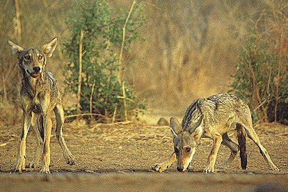
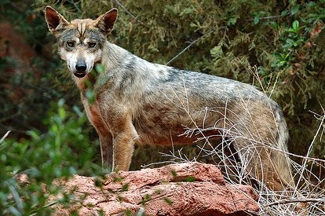

Lobo indio
Descripción
Muchas personas creen que el lobo de la India es un zorro, ya que son pequeños de estatura y cuando llegan a ser adultos pesan entre 40 y 60 libras. Tienen una piel menos densa que otras especies. Los lobos indios viven en regiones cálidas, apropiadas para sus necesidades de supervivencia.
Distribución
Los lobos indios se encuentran en las tierras abiertas de la India y son capaces de sobrevivir en áreas que se consideran desiertas. Se conoce que andan en las zonas de Pradesh y Gujarat.
Conducta
Mientras el lobo de la India es capaz de aullar al igual que otras especies de lobos, ellos rara vez lo hacen, y esto es algo desconcertante para los expertos. Sin embargo, se cree que no son tan territoriales como otras especies, por lo que no utilizan el aullido para advertir a otros que han dejado huellas en sus territorios.
Dieta/Alimentacion
La dieta del lobo indio se compone de pequeños animales, y con esto es que sobrevive, aquí se incluyen los roedores, conejos y mapaches. Sus grupos son débiles, y cada uno de ellos cazara por su propia cuenta, esta cacería generalmente comienza en la noche y termina al amanecer.
Reproducción
Esta actividad tiene lugar en el mes de octubre, y es muy diferente a otras especies de lobos. Generalmente, se reproducen solo el macho alfa y la hembra beta.
Las crías nacen alrededor de dos meses después del apareamiento, en una cueva. La madre tendrá varias casas en un área determinada y a menudo se moverá con sus crías. Al igual que otras especies de lobos, cuando tienen tres meses de edad salen de sus madrigueras, aquí el grupo entero ayudará a cuidar de ellos. Mientras que la madre busca comida para poder alimentarse y producir la leche que les brinda a sus crías, otros miembros de la manada se encargan de cuidarlos. No pasará mucho tiempo para que los jóvenes lobos salgan a buscar su propia comida para poder sobrevivir.
Conservación
Se cree que actualmente existen cerca de 3000 lobos indios en estado salvaje. Esta especie de lobos no prospera en cautiverio. De hecho, sólo existe un lugar en donde se encuentran en estos momentos, y es en el Santuario de Jai Samand en Rajasthan.
Debido a la mala reputación que tienen estos lobos, y que también el área en donde viven tiene malos resultados económicos, es difícil conseguir prácticas efectivas para su conservación.
Muchos sienten que la financiación debe destinarse a ayudar a las personas de la India en lugar de proteger a los lobos. Esto se convierte en un problema en la que la ética y la política siguen presentando trabas.